| 日付 | 2014年9月27日（土） |
|---|---|
| 山域 | 奥秩父 |
| メンバー | 単独 |
| 山行形態 | 日帰り |
| アクセス | 車 |
| ルート (Map) | 西沢渓谷入口 (6:33) - (6:58) 吊橋 - (7:07) 出合 - (8:45) チンネノコル - (9:44) 鶏冠山標柱 (9:50) - (10:09) P2115 - (11:00) P2177 - (12:20) 木賊山 - (12:46) 甲武信ヶ岳 - (13:15) 木賊山 - (14:11) 徳ちゃん新道分岐点 - (15:14) 登山口 - (15:37) 西沢渓谷入口 |
今週末は快晴だが、先週末に2回山に行っているため妻はパス。
単独で山に行く機会を得る。単独行は鍋嵐以来の2年半ぶり、
時間に制約のない単独行となると、稲含山以来の4年ぶりだ。
めったにない機会、もちろん山は慎重に選ぶ。
選んだのは鶏冠山。奥秩父にある岩峰で、西沢渓谷入口からよく目立つ山だ。
はっきりとした登山道はなく、岩場があり、山梨百名山の最難関とされている。
訛った体にとっては、体力的にも辛そうな山である。
今日は行程が長いため、朝4時に起床。
空いている中央道を飛ばして、西沢渓谷の駐車場に到着する。標高1100m。
駐車場からはこれから向かう鶏冠山の雄姿が真正面に見えている。
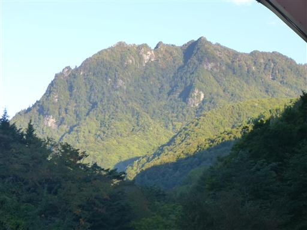
西沢渓谷に向かう遊歩道を速足で歩く。
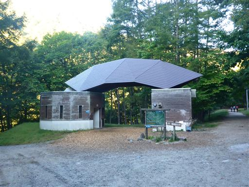
吊り橋に到着。
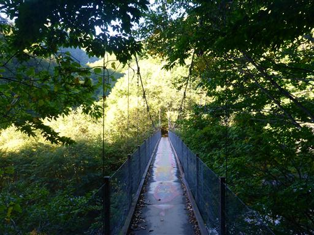
ここからも鶏冠山が良く見える。
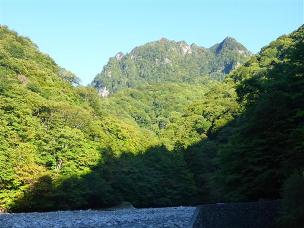
つり橋を渡った先に鶏冠山への登山口がある。
以前は「進入禁止」と書かれた立札があったのだが今はない。
この山も多くの人に登られ、だいぶ一般的になってきたのだろう。
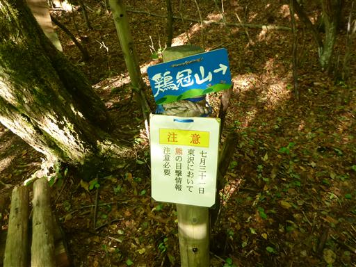
沢沿いに付けられた道を歩いていく。
道は比較的はっきりしている。
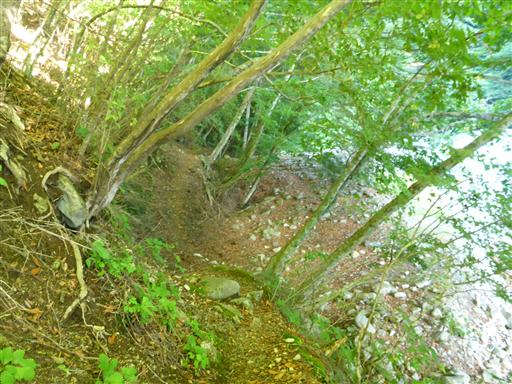
東沢と鶏冠谷との出会いのところで河原に下りる。
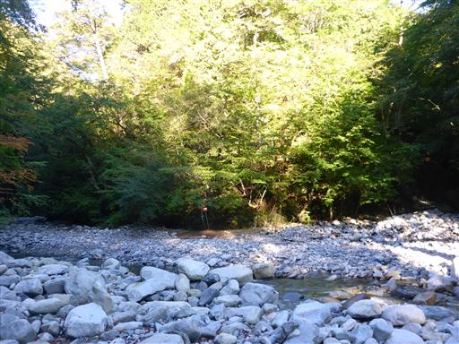
ここで沢を渡る。この季節は水量が少ない。
石をジャンプして渡れるが、滑りやすい石だったら、と考えると少し怖い。
沢を渡って辺りを見回してみたが、登山道らしきものが見当たらない。
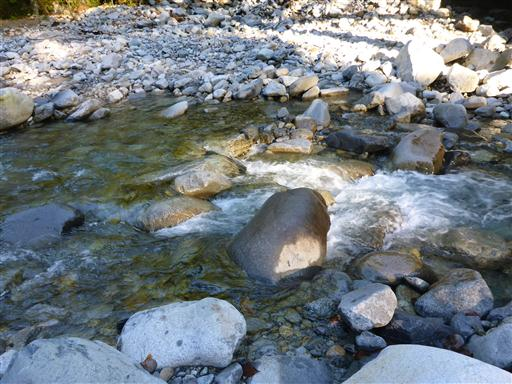
とりあえず尾根の末端から急斜面を強引に登っていくと、右から登山道が合流する。
どうも、沢を渡った後は鶏冠谷を少し遡ってから尾根に取りつくのが正しいようだ。
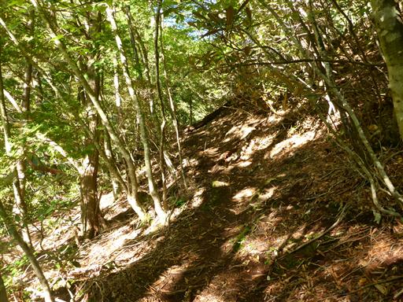
尾根に一直線につけられた急な登山道をぐんぐん登っていく。
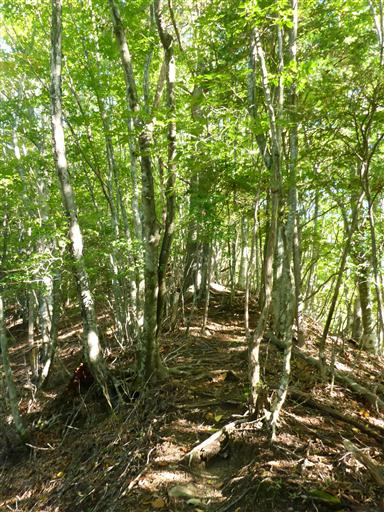
所々に標識がある。一般的な登山道ではないが、割と整備されている。
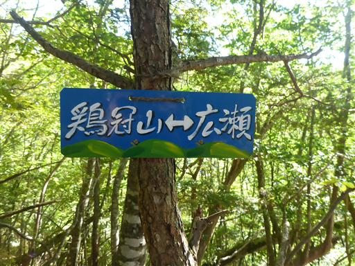
シャクナゲが現れる。だんだんと藪っぽくなってきた。
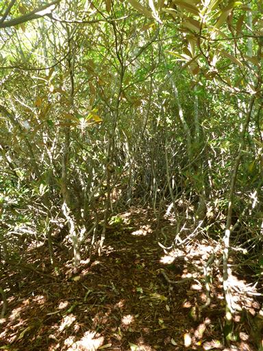
小さな岩場に出てくる。
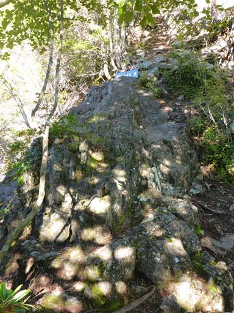
本日初めての展望が広がる。見えているのは黒金山。なかなか格好いい山だ。
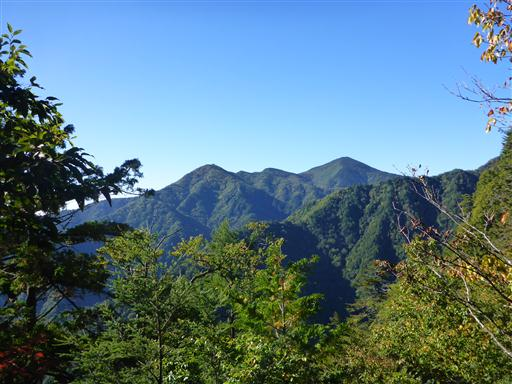
その後、道が不明瞭になる。踏み跡を追うのがどうも苦手で、たびたび道を間違える。
引き返したり、道なき道（ただし薄い踏み跡はある）を強引に突破したりして、
ようやくチンネノコルに到着する。結構時間を浪費してしまった。
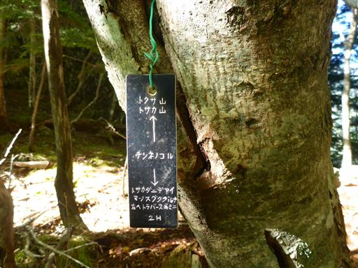
側の岩にダイモンジソウがひっそりと咲いている。
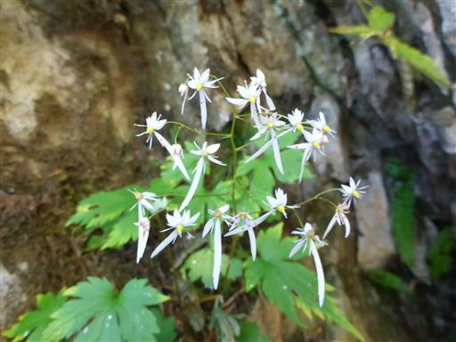
ここから先も道が不明瞭で、迷いながら進んでいく。
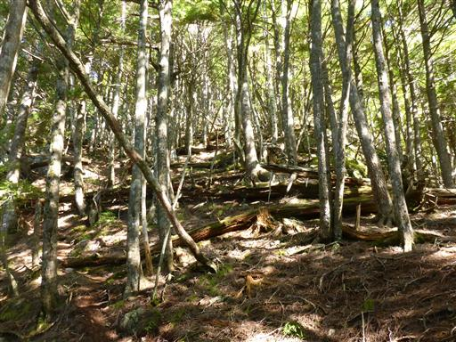
迷いつつ進んでいくと、岩の上に飛び出す。
ここまでにも鎖場があったはずなのだが、残念ながら巻道を来てしまったようだ。
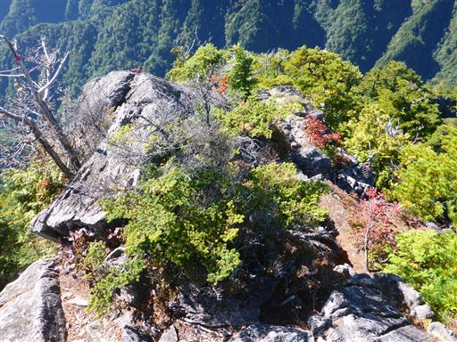
岩を登っていくと一気に視界が広がる。
目の前には鶏冠山の岩峰、そしてそこに続く岩尾根が見渡せる。

高く聳える国師ヶ岳。どてっとした山容だと思っていたが、
こちらから見る国師ヶ岳は非常に格好よく、名峰の風格がある。
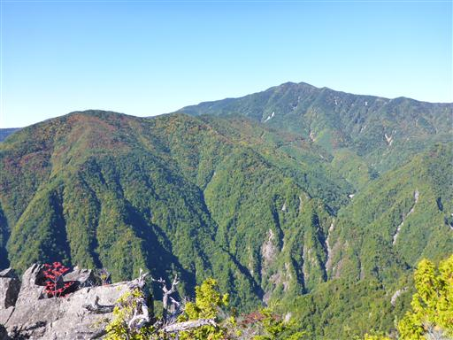
足元には遥か下方に蛇行する谷が見える。その谷からここまで登ってきた。
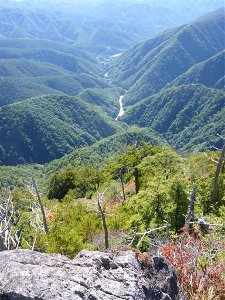
前の山に隠されつつ、富士山の姿が半分見えている。
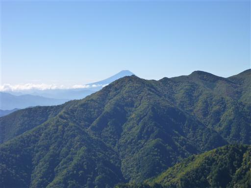
楽しい岩尾根を進んでいくと、鎖場が現れる。
鎖は最近設置されたものらしいが、使わなくても登れる。
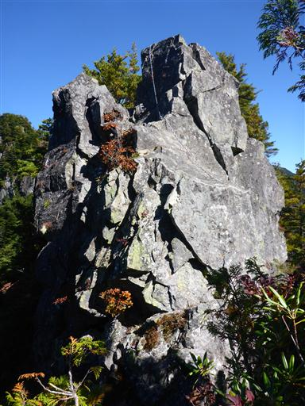
薄くて鋭い岩。このような形は手足を掛ける場所になりやすいので上り下りしやすい。
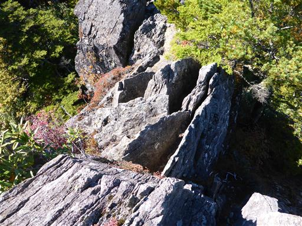
鶏冠山の見事な岩壁。遥か下方まで続いている。
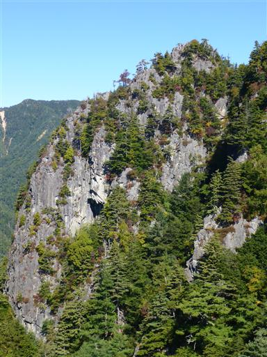
岩の中の小さな木が真っ赤に紅葉している。
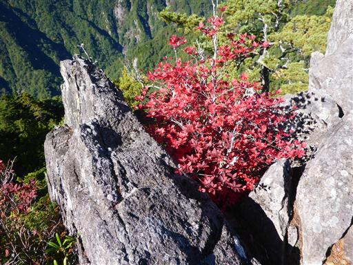
こちらは小さなシャクナゲ。今後大きくなって登山道をふさぐのだろうか？
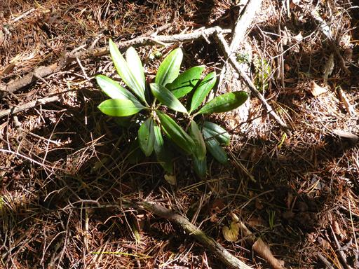
第3岩峰に到着する。
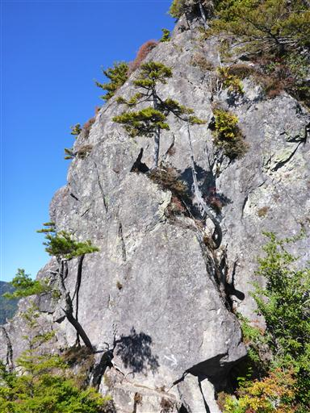
この岩峰には迂回路の標識が立っている。迂回するのが一般的なようだ。
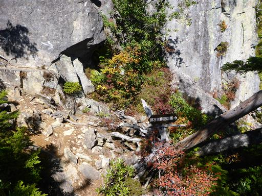
鎖もない岩場だが、直登する人もいるらしいので、試しに取りついてみる。
途中で放置されたロープが落ちている。
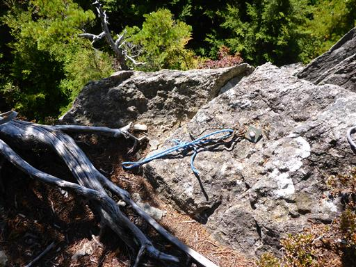
だいぶ上がったところで足元を見下ろす。
高度感はあるが、手足を掛ける場所が多いため思ったほど難易度は高くない。
金峰山の五丈岩よりは簡単と思われる。
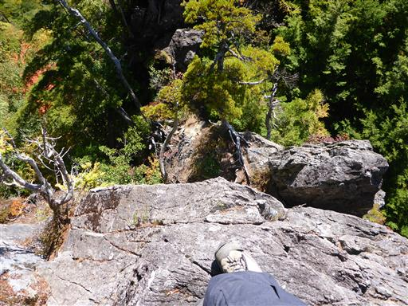
岩の直登を終えると、あとは傾斜のある岩尾根を登っていく。
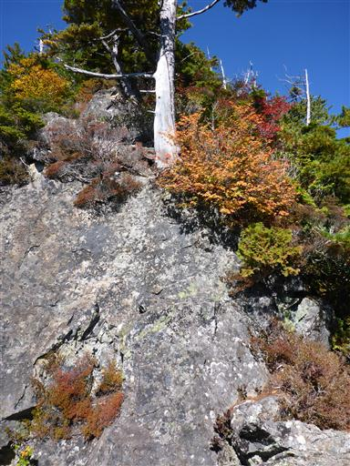
登って来た尾根を見下ろす。
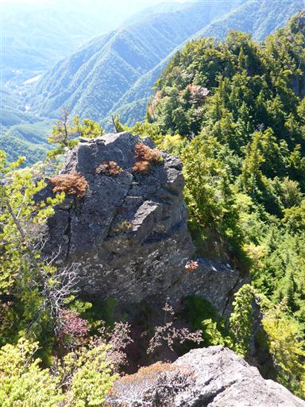
イワインチンの花が岩の間に咲いている。
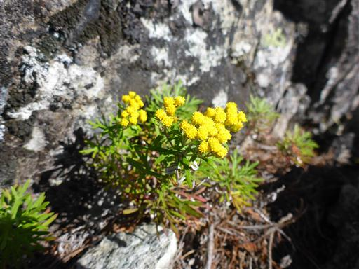
しばらく登っていくと、開けた場所に出てきて山梨百名山の標柱が現れる。
特にピークでもない場所に立っている謎の標柱だが、展望が良いため一休みする。
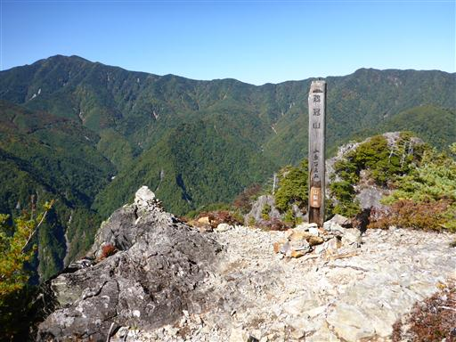
隣に見える山は上の方が少し紅葉し始めている。
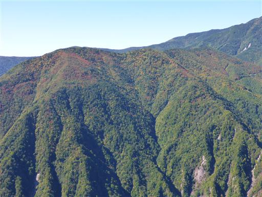
少し休憩したら出発。行程はまだまだ長い。
標識のところから引き返す人も多いようで、ここから先は藪が酷くなる。
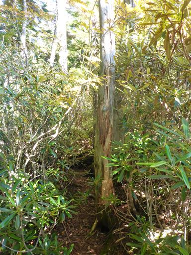
所々に倒木もあって歩きにくい。
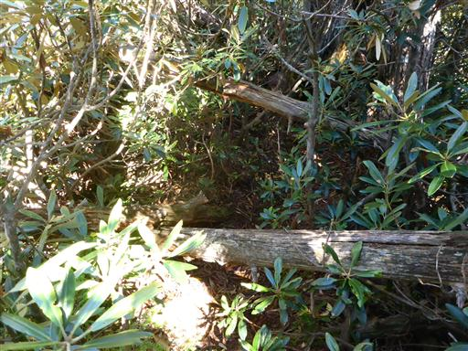
しばらく歩くと、2115m峰に到着する。
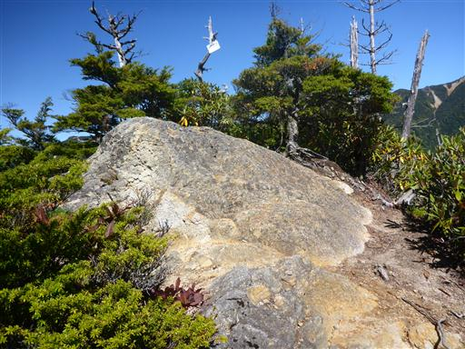
ここにも鶏冠山の小さな標識がある。鶏冠山の山頂というと、ここを指すことが多いようだ。
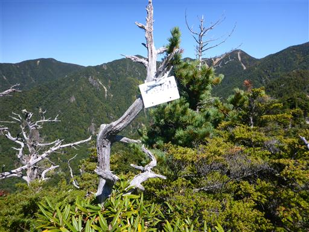
ここまで来ると標高が上がったため、富士山の姿が完全に見えるようになる。
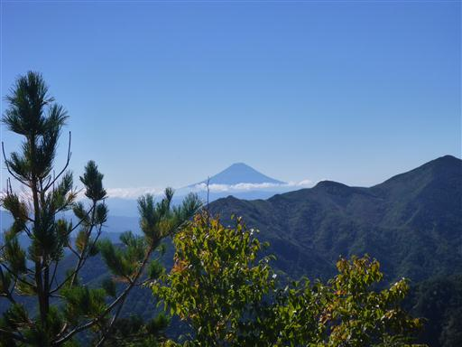
これから向かう木賊山と、その向こうに甲武信ヶ岳が良く見える。
まだかなりの距離がある。
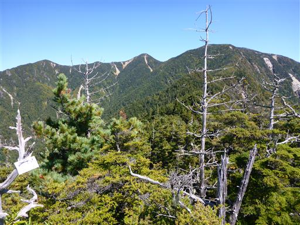
ここから先も藪尾根が続く。岩がちな地形で結構な痩せ尾根だ。
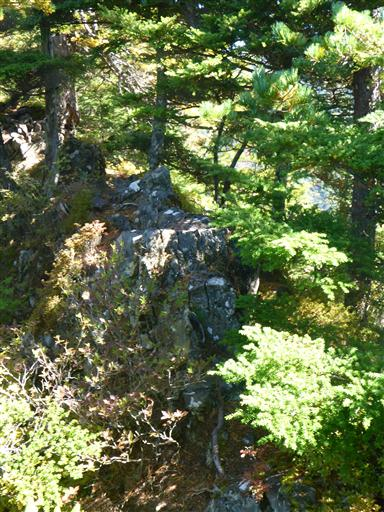
岩の端に枯れ木がポツンと立っている。
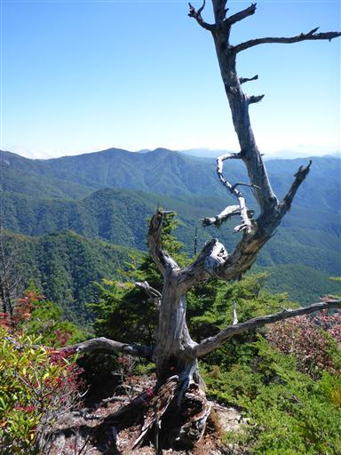
藪の中を歩いていくと、再び視界が開けてくる。
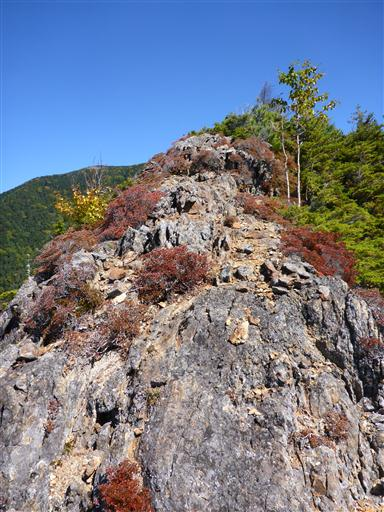
2177m峰に到着する。標識は特にないが、鶏冠山の標高を2177mとしている資料もあるため、
その場合はここを指しているのだろう。
この尾根は顕著なピークがないため、どこが山頂と言いにくい。
鶏冠山を登ったというより鶏冠尾根を登ったと言った方が正確かもしれない。

歩いて来た尾根を振り返る。
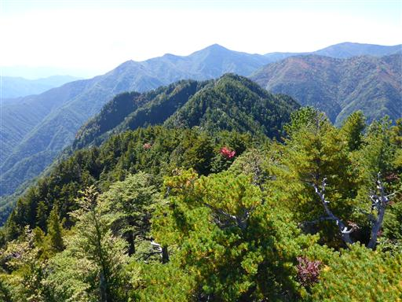
ここまで近づくと木賊山がより高く見える。
まだ300m以上登る必要があるのに、足が疲労し始めている。
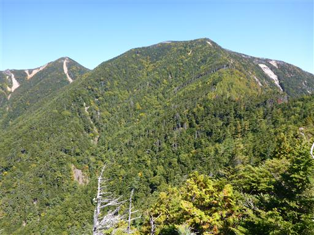
苔生した登山道。左から巻ぎみに踏み跡は続いている。
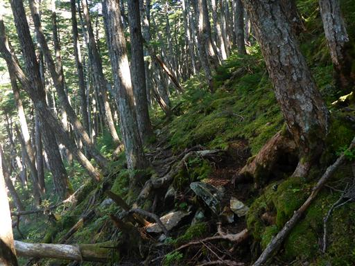
両側から覆いかぶさる針葉樹。通ると上から葉っぱが無数に落ちてくる…
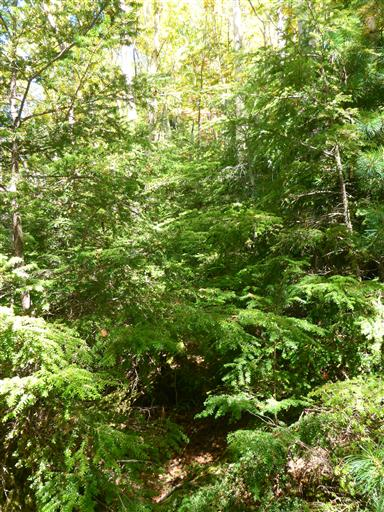
見上げると黄葉が美しい。
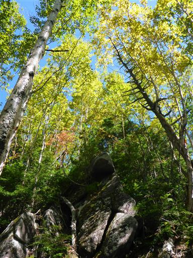
きつい登りが続く。疲労困憊でフラフラと登っていく。
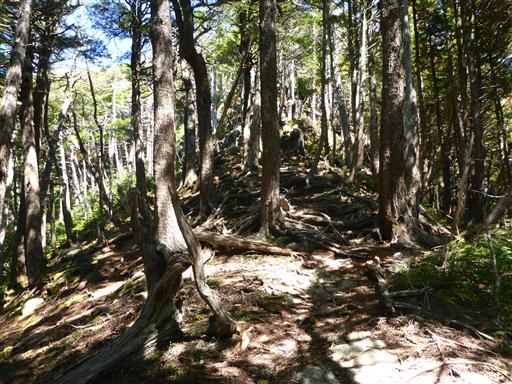
傾斜が緩んでくる。山頂は近いようだ。
もうシャクナゲの藪漕ぎをする体力は残っていないので、踏み跡を外さないように慎重に慎重に歩く。
山頂の10mほど手前の場所にポンと飛び出す。
ついに木賊山の山頂に到着だ。標高2469m。
ここまで誰とも出会わない静かな尾根だった。
ここから甲武信ヶ岳までは往復1時間。甲武信ヶ岳に立ち寄るかどうか、少し考える。
時間はまだ少し余裕があるが、体力的には結構辛い。
世の健脚者たちは、皆ここから甲武信ヶ岳を往復しているようだ。
ここまで来たのだし、意を決して甲武信ヶ岳に歩を進める。
ここからは一般登山道。見違えるような道だ。
少し下ると視界が大きく開ける。
目の前には目指す甲武信ヶ岳が見えている。
振り返ると白砂と紅葉が美しい。
木賊山と甲武信ヶ岳の鞍部にある甲武信小屋に到着する。
甲武信小屋のテント場。
ここは初めてテント泊山行を行った時にテントを張った思い出深い場所だ。
ここから甲武信ヶ岳までは一登り。
所々で展望が広がる明るい道を登っていく。
わずかの登りなのだが、もうフラフラだ。
振り返ると先ほど登った木賊山が見える。山容は甲武信ヶ岳より立派だ。
山頂が見えてきた。
甲武信ヶ岳の山頂に到着。標高2475m。
以前登った時はテント泊装備でも大して疲れなかったのだが…
もちろん歩行速度もルートも異なるのだが、体力の衰えを感じる。
今回も山頂からは大展望が広がる。
見えているのは左から国師ヶ岳、金峰山、小川山だ。
富士山もくっきり見えている。
遠くに浅間山、中央に目立つのは御座山だ。
木賊山まで引き返すと、本日の登りはおしまい。あとは下りのみだ。
木賊山から少し歩いたところに、鶏冠尾根通行止の標識がある。
自分が鶏冠尾根から登山道に合流した場所とは少しずれた場所だ。
以前甲武信ヶ岳に登った時に、この標識を見て
いつか鶏冠尾根を辿ってみようと思ったことをよく覚えている。
標識の指し示す先を覗いてみたが、藪しか見えない。
ここから鶏冠尾根に侵入するのは不可能そうだ。
下山道もところどころで展望が広がる
たびたび大きなザックを持った人とすれ違う。皆甲武信小屋で宿泊するのだろう。
甲武信ヶ岳は宿泊登山が一般的だ。
この尾根もシャクナゲは多いが、こちらはしっかりと切り開かれている。
近丸新道と徳ちゃん新道の分岐点に到着する。どちらも新道というのが面白い。
以前、甲武信ヶ岳に来たときは近丸新道を登ったので、今回は徳ちゃん新道を下ってみる。
鶏冠谷を隔てた向こう側に、登った鶏冠尾根が見える。
鶏冠尾根に一際目立つ岩峰が見える。
木の葉が邪魔してはっきりとは見えないが、稜線上の岩峰ではなさそうだ。
長い長い下り道を惰性で下っていく。
倒木を乗り越えやすいように階段がつくられている。
ようやく登山道入口に到着。
ここから西沢渓谷の遊歩道をとぼとぼ歩いて駐車場に向かう。
駐車場に到着。今日歩いた鶏冠山のシルエットが見えている。
久々に疲れた山行となった。鶏冠尾根は素晴らしい尾根だったが、
次行く時は山梨百名山の標柱までで十分だ。
中央道は混雑していたが、夕飯の時間までには無事家に帰ることができた。